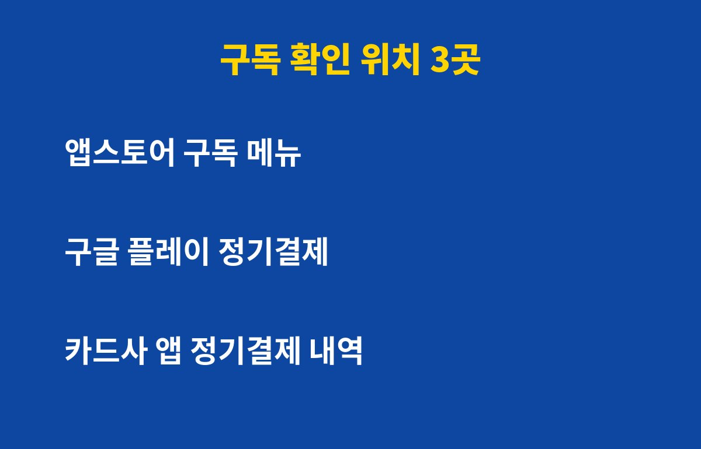
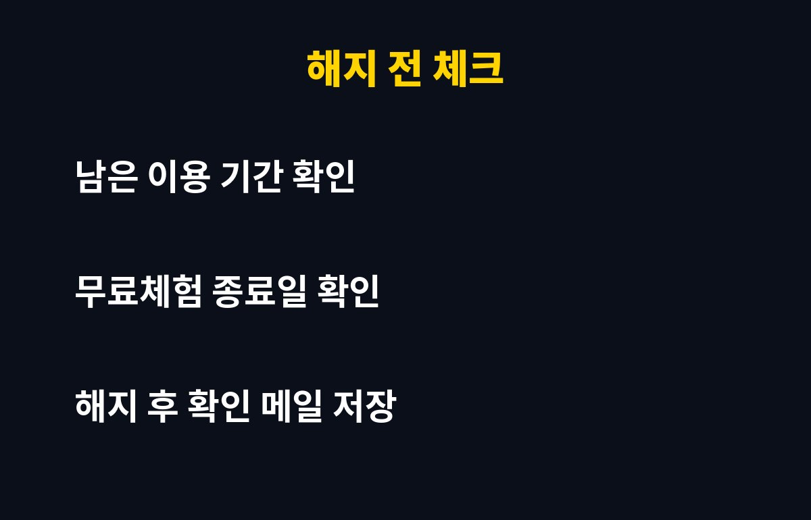

구독 결제, 지금 몇 개나 나가고 있는지 정확히 말할 수 있나요? 스마트폰 쓴다면 한 번도 안 들여다본 사람이 대부분인데, 그 사이에 매달 조용히 빠져나가는 돈이 얼마일지 궁금하지 않으세요?
구독 결제는 왜 이렇게 잘 잊힐까요?
무료체험으로 시작해서 그대로 유료로 넘어간 앱, 한 번 써보고 잊은 AI 서비스, 아이가 눌러둔 게임 정기결제까지. 금액이 작으면 카드 명세서에서도 그냥 지나치게 되거든요.
문제는 이게 한 곳에서 관리되지 않는다는 점이에요. 앱스토어, 구글 플레이, 서비스 홈페이지, 통신사 결제가 따로따로라서 하나만 확인하면 나머지는 그대로 남아 있어요.
어디서 확인해야 빠짐없이 찾을 수 있나요?
아래 세 곳만 보면 거의 다 잡혀요.
| 확인 위치 | 찾는 방법 | 잡히는 것 |
|---|
| 아이폰 구독 메뉴 | 설정 → 내 이름 → 구독 | 앱스토어로 결제한 구독 |
| 구글 플레이 | 프로필 → 결제 및 정기 결제 → 정기 결제 | 갤럭시·안드로이드 앱 구독 |
| 카드사 앱 | 최근 결제 내역에서 반복 결제 검색 | 웹에서 직접 가입한 서비스 |

특히 카드사 앱은 꼭 보세요. 스토어를 거치지 않고 홈페이지에서 직접 가입한 서비스는 스토어 메뉴에 안 뜨거든요. 같은 금액이 매달 같은 날짜에 찍혀 있다면 구독일 가능성이 높아요.
찾았다면 어떻게 정리하는 게 좋을까요?
일단 최근 한 달 안에 한 번도 안 열어본 앱부터 해지 후보로 올려요. 쓰긴 쓰는데 비싼 것 같다면 연간 결제나 가족 공유 요금제가 더 나은지도 비교해볼 만해요.
해지할 때는 남은 이용 기간부터 확인하세요. 대부분 해지해도 결제한 기간까지는 쓸 수 있어서, 급하게 아껴야 할 이유가 없거든요. 그리고 해지가 끝나면 확인 메일이나 화면을 꼭 저장해두세요.

앞으로 또 새지 않게 하려면요?
무료체험을 시작하는 순간 휴대폰 일정에 종료일 하루 전 알림을 걸어두세요. 이 한 줄만 해도 의도치 않은 첫 결제는 거의 막을 수 있어요.
그리고 석 달에 한 번, 오늘 한 것처럼 세 곳을 훑어보는 습관을 들이면 좋아요. 5분이면 끝나는데 한 해 동안 새는 돈 차이는 꽤 커질 수 있어요.
오늘 바로 설정 화면부터 열어보세요. 의외의 구독이 하나쯤은 나올 거예요.
이런 생활 속 IT 꿀팁이 도움이 됐다면 구독하고 다음 글도 받아보세요!
기사·공식 발표 기준이며 출시·가격 정보는 바뀔 수 있어요.